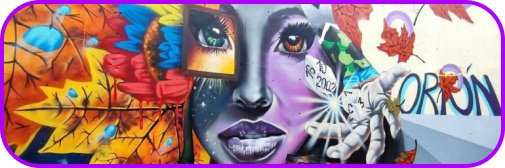
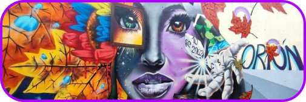
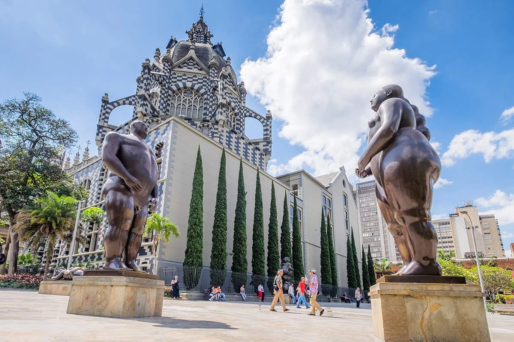
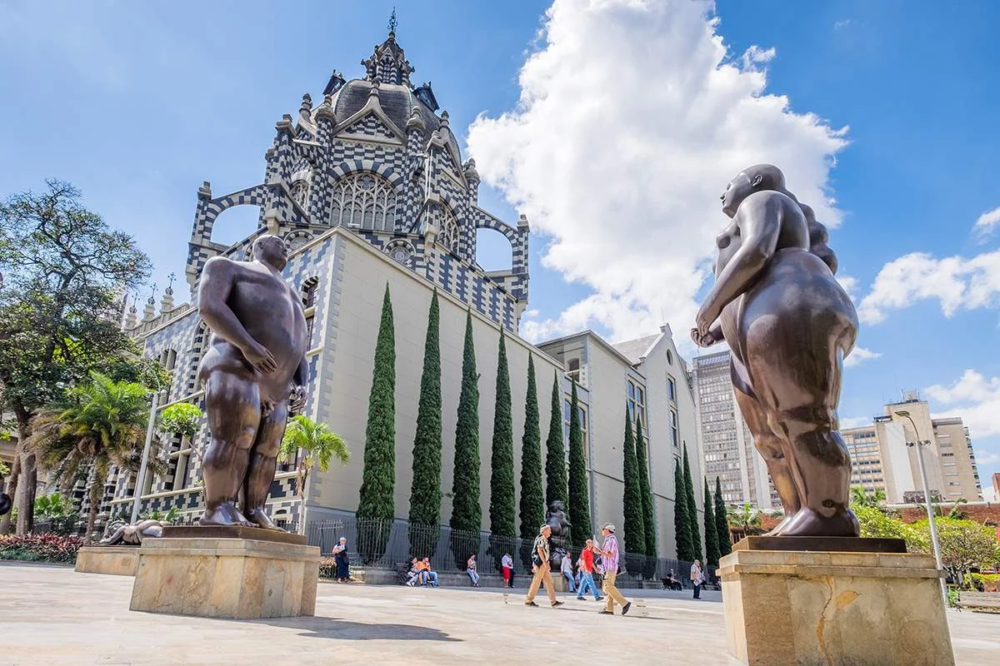

Ahora estas en la ZONA DE TOURS de la ciudad
A continuación encontraras una serie de lugares seleccionados cuidadosamente para asegurarte una experiencia cultural y gastronómica propia de Medellín.

PARQUE ARVÍ +METROCABLE
Aquí podrás conocer la cultura silletera, mientras haces deportes extremos en familia y ver toda Medellín desde las alturas
MEDELLÍN DE NOCHE
En esta experiencia conocerás los mejores lugares para visitar de noche en Medellín el paquete perfecto para un PARTY
 

COMUNA 13 Y SU GRAFIT
Este recorrido te mostrara levemente algunas comunas, pero nos centraremos en esta, un lugar lleno de magia, un museo de arte y baile al aire libre
 

MEDELLÍN HAMBRIENTO
Visitaras los mejores lugares de comida en toda MEDELLÍN desde los lugares más lujosos, un tour gastronómico completo visitando lugares de la zona norte, centro y sur de las comunas con descuentos inolvidables